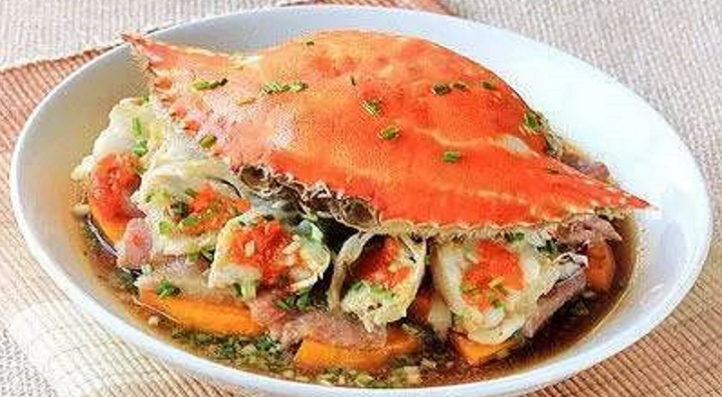
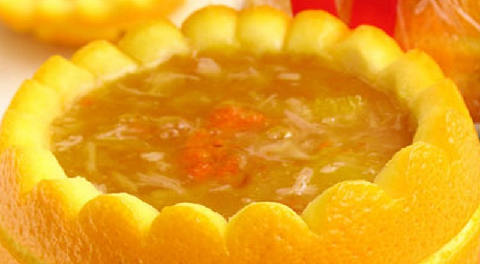
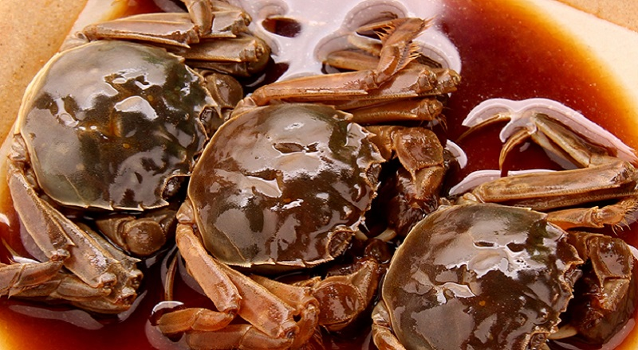

阳澄湖大闸蟹怎么吃？

阳澄湖大闸蟹的做法和吃法之一：蒸蟹 这是最好的吃法。
挑选个大、肢体全、活力强的阳澄湖大闸蟹，放在清水里洗净，用绳或草把大闸蟹的两个夹子和八条腿扎紧成团状，入锅隔水蒸熟。也可以放在水里煮熟。下锅时可放一些生姜、紫苏、黄酒、食盐与之同煮，可以避寒去腥。食用时配上自己精心调制的酱汁和黄酒，既能调味驱腥，又能完全吊出阳澄湖大闸蟹的美味。
蒸煮螃蟹时要注意:在水开后至少还要再煮20分钟。

阳澄湖大闸蟹的做法和吃法之二：蟹酿橙
材料，阳澄湖大闸蟹，橙子。配料，酒、醋、食盐。过程:选熟透且带有两片叶子的大橙子，把顶部切下去瓤，留下少许橙汁，把 大闸蟹的黄、肉塞入其中，再以切下的顶部封口放入蒸锅中，加酒、醋、水蒸熟。吃大闸蟹时蘸醋、盐，滋味清香，令人悠然而生雅趣...

阳澄湖大闸蟹的做法和吃法之三：醉蟹
首先配制醉液、醉露，用精盐、葱、老姜、桂皮、八角、花椒组成“醉液”，倒入锅中用旺火烧沸，稍煮片刻，捞去葱姜桂皮等，用纱布过滤除去杂质，冷却后倒入干净的坛中，再以白糖、味精、高粱酒制成“醉露”，将醉露倒入醉液坛中搅匀。然后再处理 大闸蟹蟹，取健壮的活大闸蟹洗净后在水中暂养两到三天，并每天换水，为了排除大闸蟹体内污物。然后捞取放置让大闸蟹吐干水分，再在大闸蟹脐内放少许精盐稍候片刻。最后，就可以把 大闸蟹放入坛中且全部浸没，密封保存10天就可以食用了。
注意:醉液中盐的含量不能低于20%。
怎么样，你看馋了嘛？